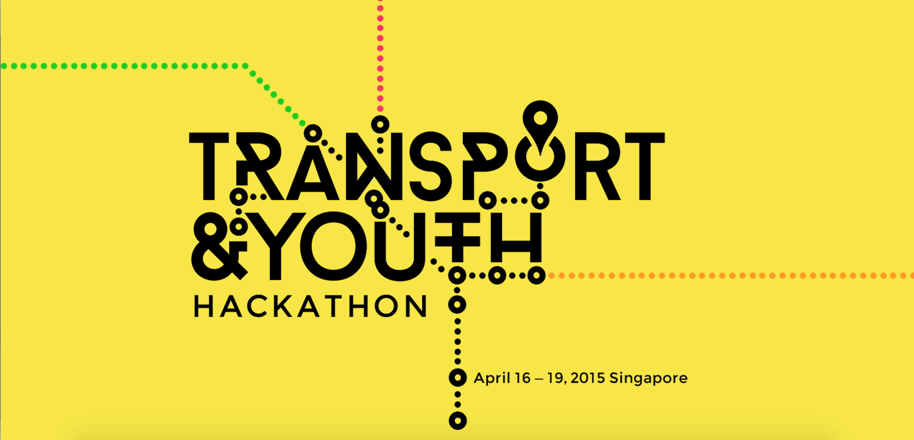
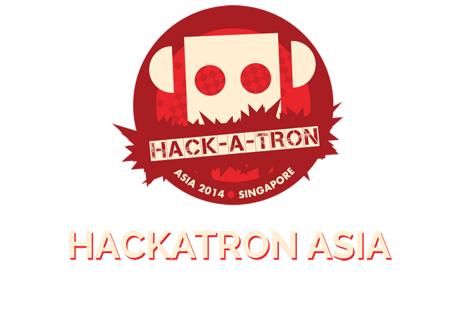
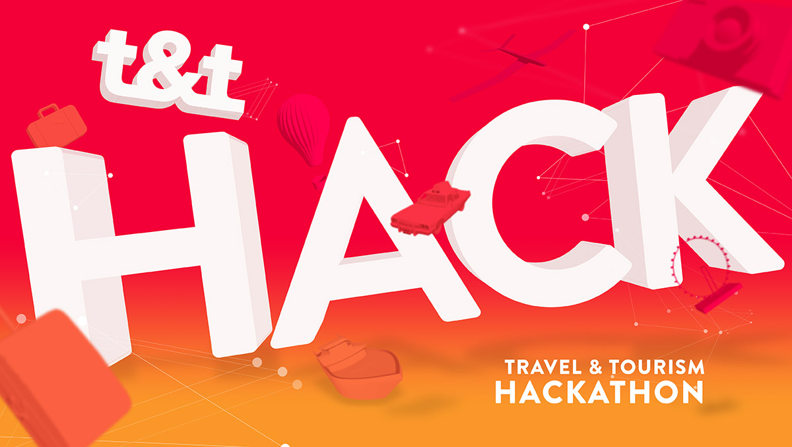
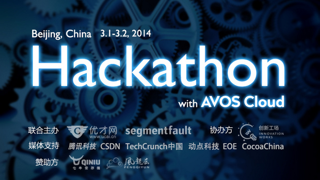
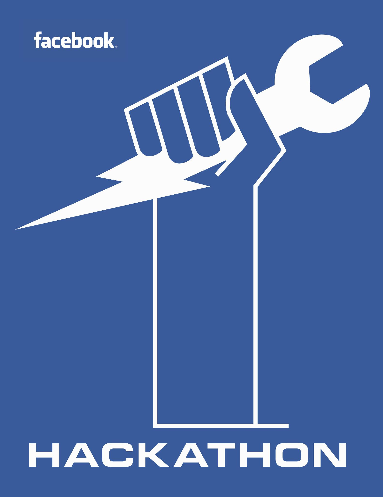
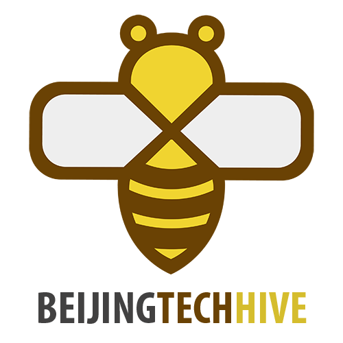

Transport and Youth
I involved in this hackathon as a mentor. Both my teams won top prizes. Team DnD won "Best App for Active Mobility" and team Concept Crew won "Best App for Public Transport". It was a privilege that the teams had the chances to took pictures with Prime Minister Lee Hsien Loong.

Read more April 16-19th, 2015, SingaporeHackatron 2014
In this hackathon, I worked with a friend from Paypal on a photo taking app which helps selfie lovers to take selfie photos more easily. Yotaphone co-organized this event and we ultilized its dual-side display to make selfie more fun.

Read more March 2nd 2014, SingaporeTravel&Tourism hackathon
In this hackathon, I worked on a travel companion community which is intended to help international travellers to find local residences as travel guides. It's like an Airbnb for travel guides.

Read more Nov 28th 2014, SingaporeAVOS hackathon(Innovative Works hackathon)
It was the 5th anniversary of Innovation Works, an incubator and angel investmentor for Chinese young entrepreneurs. I participated in this hackathon with a Physics PHD student, Pan Zan, who happened to be a great Front-end Developer. We hacked a knowledge curation system named Schrödinger's cat for people to review and rate books/videos/articles.

Read more March 2nd 2014, BeijingFacebook Hackathon
It was a great hackathon, very enjoyable for engineers. In this hackathon, I worked with two friends on a private chatting app which helps young lovers living in long distances to better communicate. The problem came from my own painful experience and it eventually becomes an live app on App Store.

Read more Feb 16th 2014, SingaporeBeijing Tech Hive Hackathon
This hackathon took place in Microsoft Beijing. Teams were formed in a special way where people introduced their ideas before team building and only the top ideas would have the chances to get executed. I formed a team with a senior manager from Amazon, a talented designer, an Android developer and two other entrepreneurs. We got the second place and the idea became a real company named 玩编程 to teach Chinese youth to learn coding.

Read more July 1st 2013, BeijingGeekjam hackathon
This hackathon was organized by an Israeli consulting company named Labgoo who created a fun game named "Pah!" In this hackathon, I worked with two team members on a mobile voucher app which help people collecting vouchers and save money.
Read more July 1st 2013, Singapore